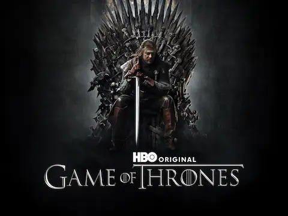

🐉 GOT
📅 16 · NOV · 2026

El showrunner Ira Parker ha confirmado a The Hollywood Reporter que George R. R. Martin trabaja en un cuarto relato de Dunk y Egg, ambientado según Parker en un escenario muy atractivo; Martin ya adelantó en el pasado que sería Winterfell, con un grupo de mujeres Stark conocidas como las She-Wolves of Winterfell. Parker también quiere seguir a los protagonistas a lo largo de su vida: tras el último punto de la historia en que Egg aún es un niño haría una pausa para que Dexter Sol Ansell crezca, y descarta recastear al personaje. Después vendrían un Egg ya príncipe, más política y escenarios como Summerhall y Desembarco del Rey. La temporada 2 se espera para la primera mitad de 2027, y The Winds of Winter sigue sin fecha.